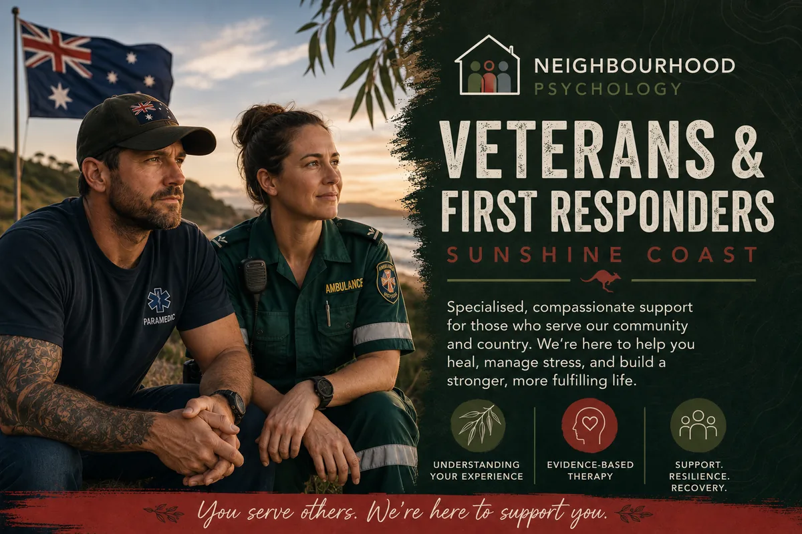

Psychology that respects operational culture, understands the weight of service, and doesn't require you to explain yourself from scratch. In person in Maroochydore and via Telehealth Australia-wide.

Dean served 13 years in the Royal Australian Air Force before training as a psychologist. That background isn't a footnote — it's why working with veterans, current service members, and emergency services personnel feels like a natural fit. He knows the culture, the language, and what it means to be someone who gets on with the job regardless of what's going on underneath.
If you've ever sat across from a psychologist who clearly had no idea what a deployment actually involved, or found yourself editing your own story to make it more digestible, this approach is different. Sessions are direct, practical, and built around where you actually are.
Who this is for: Current and former ADF members, veterans, police officers, paramedics, firefighters, and other emergency service workers. Dean spent 13 years in the Royal Australian Air Force. You won't need to explain the culture or edit your story to make it more digestible. DVA-funded sessions are available for eligible veterans.
There's no single picture of what brings someone in. Common presentations include:
Sessions are practical and collaborative. The approach is evidence-based — drawing on trauma-focused CBT, ACT, and other approaches suited to the individual — but it doesn't feel like a protocol. You won't be asked to do things that don't make sense for where you are.
Progress is tracked honestly. If something isn't working, we'll say so and adjust. The aim is real change, not an open-ended process that keeps you coming back without a clear direction.
For more detail on specific treatment approaches including EMDR and exposure therapy, see our article on PTSD treatment.
Neighbourhood Psychology is registered to provide services to eligible Department of Veterans' Affairs (DVA) clients. Eligible veterans may access psychology sessions with a DVA referral at no out-of-pocket cost. If you're not sure whether you're eligible or how to access DVA-funded support, contact us and we'll help you work it out.
No referral is needed to book a standard appointment. For Medicare rebates, a GP referral and Mental Health Care Plan is required. For DVA-funded sessions, a DVA referral is required. We're happy to help you navigate whichever path fits your situation.
Yes. Telehealth sessions are available Australia-wide. This is particularly useful for those living outside the Sunshine Coast, working shift rosters, or who prefer the privacy of connecting from home.
Yes. Psychologists are bound by strict confidentiality requirements. Information is not shared with the ADF, your employer, DVA or any other organisation without your written consent, except in very limited circumstances required by law (such as immediate risk of serious harm). We'll explain this clearly at your first appointment.
This can be arranged where it's clinically appropriate and you'd like it. We can discuss what that might look like when you get in touch.
Just get in touch. We'll work out the rest from there.